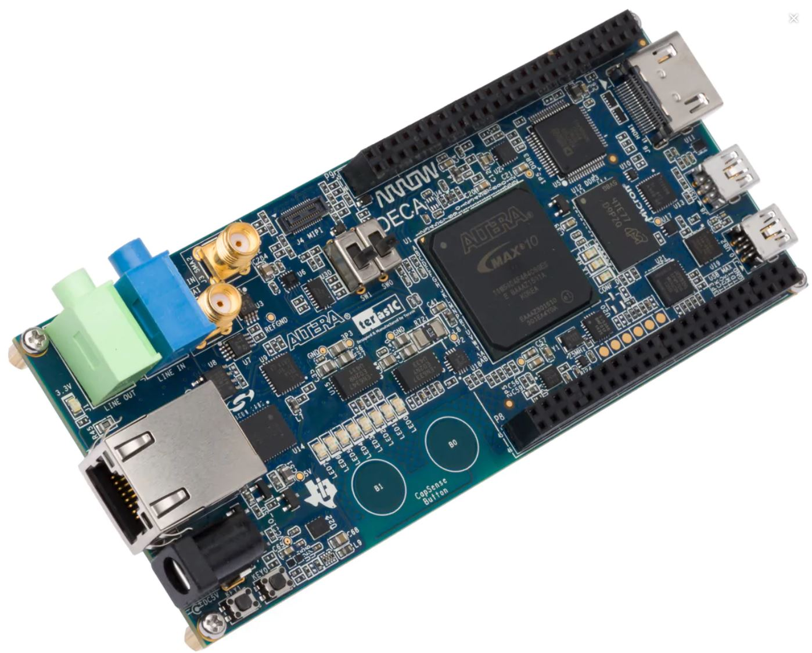
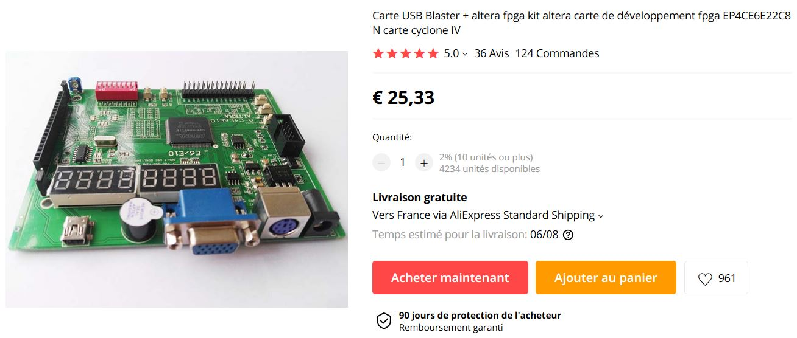
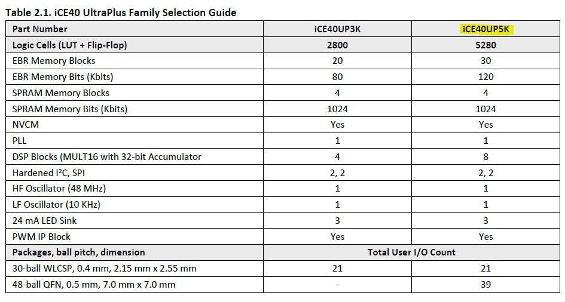

FPGA*¶
- Auteur
J.Soranzo
- Date
Novembre 2019
- Societe
VoRoBoTics
- Entity
VoLAB
Sommaire
Carte low cost¶
Carte XILINX compatible Arduino¶
Arduino-compatible Spartan-6 projet Hackaday 3 FPGA board sur forum Xilinx,Environ 70$
Le projet sur hackaday.io http://store.hackaday.com (lien mort 28/09/2020)
Voir projet perso 014 designed with PRotel for Windows
A ma dernière viste sur le site Tindie plus de carte FPGA Xilinx !
Chez AliExpress¶
Carte très simple à base de SPARTAN
Contenu du Xmind¶
FPGA
Autre carte Xilinx
chez AliExpress 28€14
https://fr.aliexpress.com/item/705461772.html?recommendVersion=1
Xc3s500e:The xilinx spartan- 3e fpga
Simple
A programmée en JTAG
Tous les I dispo sur 3 connecteurs double au pas de 2.54
Spartan6
89€
ebay /Xilinx-FPGA-USB-Development-board Spartan-6-XC6SLX9 +Download-Cable-Programmer-/272421798098
Fournie avec le cable JTAG XILINX
Spartan evec de l'ethenet
http://www.digitalshortcut.com/buyx50wz.html
119$
artix-7-fpga-development-board-for-makers-and-hobbyists/
ARTIX 7
2 options 119$ et 249$
Avec Ethernet
Exemple et doc
https://www.hackster.io/digilent/products/arty-s7-50
Cora Z7 toujours chez Digilent
Zynq 7000
2 option 99$ et 129$
Avec Ethernet
exemple d'utilisation
www.hackster.io adam-taylor hexapod-robot-fpga-based-solution
https://www.hackster.io/adam-taylor
papillo board (Xilinx premier prix ~38$)
chez Seeedstudio complet
Autre carte ALTERA
23$99
EP4CE6 Cyclone 4
56€
avec clone usb blaster
dernier objet
analoglamb.com altera-max10-fpga-board-10m02scm15310m08scm153/
à partir de 32.99$
Une version aussi en LATTICE
MACHX02
Altera 10M02SCM153/10M08SCM153 Chip inside
10M08SCM153 Chip has 8000 LEs,32K Flash,378Kb RAM
Two SMD 7 Segment LEDs and Two RGB LEDs
Four Buttons and Eight LEDs for Indication
Micro USB as PSU,and Large Current LDO with 3.3V output
Support USB Programmer
Easy to use and mount with Two Headers
Small Size: 20x48mm
Seulement 40 user io dispo
Altera EP2C5T144
13.26€
570 LE <=> 440 macro cell
une centaine d'I/O
3x28 pin 2.54mm
oscillateur 50MHz
JTAG programmer
8.99
Voir aussi Waveshare.com
Carte Logi-Pi
Sparten 6 LX9
dispo chez Farnel
50.88€
pas le bon lien (carte d'extension !
Attention c'est juste l'expansion board
Chez Farnell : plus stoké
TinyFPGA
https://hackaday.io/project/25958-tinyfpga-a-series
https://hackaday.io/project/26836-tinyfpga-programmer
C'est du LATTICE avec le soft en free license
4 carte dispo A1, A2 , B1, B2
de 12 à 36€
A1
18I/O
256 x 4 input lookup table
Retourvé chez SPARKFUN
Mojo
aussi chez sparkfun
https://www.sparkfun.com/products/11953
spartan6
environ 70$
On la trouve également sur ebay à 39$
tuto
https://alchitry.com/pages/verilog
http://jacques.weber.pagesperso-orange.fr/
USB blaster
ou moins cher
migen
MIGEN
ça gère la simulation (via iverilog/gtkwave)
- ça facilite très bien l'écriture de test_bench (en python)
- ça contient une bibliothèque de modules déjà pré-écrit (Fifo, Sdram controller, flash controller, sdram PHY, générateur d'arbitre de bus wishbone etc)
- permet de faire du Dataflow programming
- permet d'utiliser python au lieu de verilog ou VHDL, ça donne accès au sucre syntaxique python et à toute la puissance du paradigme objet.
- Ca peut générer les headers .h avec les getter/setter de tes registres memory mappé si tu design un SoC (en combinant Migen à MiSoC)
- Ca apporte une abstraction du HW (de la carte) pour faire des design portables (cf migen.git/mibuild/platforms)
- Open source toussa
- Ca prend donc du python et ça te sort un binaire que tu peux flasher directement dans ton FPGA (voir ça te le flash directement) EN UTILISANT LA TOOLCHAIN PROPRIO Xilinx ou Altera.
http://fr.farnell.com/logi/logi-edu-2/add-on-board-logi-edu/dp/2466954?COM=dtss-detail_DesignCenter_ValentFX_LOGI-EDU-2%20CMPNULL
projet open source pour écrire du fpga en python
fpga-design-with-python : MyHDL
créé en 2003
http://www.myhdl.org/
Projet IceStorm
basé sur le projet de reverse de bitStream de Clifford Wolf
openSource FPGA
Cible Lattice IceStick par exemple
Synthèse Yosys
IceStick Lattice
20.89$
Zedboard
Zinq
Carte Digilent
178$
La gamme s'est étoffée
microzed
picozed
carte support 425US$
à partir de 178e
ultrazed
ZEDboard a de l'Ethernet
474USD
Xilinx Zynq®-7000
ALTERA / INTEL FPGA¶
MAX10 versus CYCLONE I, II, III, IV¶
LEs familles INTEL/FPGA en 2020:
AGILEX: 10nm intensive application
STRATIX: high-performance, state-of-the-art products to market faster with lower risk and higher productivity.
ARRIA: performance and power efficiency in the midrange.
CYCLONE: meet your low-power, cost-sensitive design needs, enabling you to get to market faster.
MAX10: revolutionize non-volatile integration by delivering advance processing capabilities in a low-cost, single chip small form.
MAX10 : CPLD techno Flash (pas tout à fait vrai - la flash est intégré au boîtier)
CYCLONE iV techno FPGA. Le dernier de la famille est Cyclone 10 introduit en 2017. IV en 2009 et V en 2011
MAX10 : introduite en 2014 après MAXII en 2004 et MAX V en 2010.
Il y a 7 tailles de puces : 10M02, 04, 08, 16, 25, 40, 50 caractèrisant le nombre de LE de 2K à 50K. Contre 2 familles de C iV de 7 et 9 tailles famillles GX( EP4CE6 à 115 ) et GX ( EP4CGX15 à 150 ).
Cyclone 5 c’est 6 sous-familles ou variants dont 3 integre directement des CORTEX -A9 ! (Optimized for transiver applications…)
Cyclone 10 : 2 familles LP et GX. LP sans doute pour low power
Source : site INTEL FPGA family 5
DECA-MAX-10 de chez ARROW¶
{kind=link}
ARROW DECA MAX-10 6 : environ 155$
10M50DAF484C6G FPGA
50k LE, 1638 KRM,
ARROW
Parmis les choses intéressante de cette carte : sortie HDMI, coupleur Ethernet, lecteur de carte micorsd,
QSys se nomme maintenant Plateform Designer dans la chaine Quartus
- Altera MAX ® 10 10M50DAF484C6G device
50,000 LEs
1,638 Kbit (Kb) M9K memory
512 Kbit (Kb) user flash memory
Four phase locked loops (PLLs)
144 18x18bit multipliers
Two ADC blocks – 1 MSPS, 12-bit, 9-channels each
18 analog inputs
One on-chip temperature sensor
360 general purpose input/output (GPIO)
Non-volatile self-configuration with dual-boot support
External peripherals
USB Blaster II onboard for programming; JTAG Mode
512 M B DDR3 SDRAM (16 bit data bus)
64 MB QSPI Flash
Micro SD card socket
Two CapSense button s
Two push buttons
Two s lide switches
Eight blue user LEDs
Three 50MHz clock sources from the clock generator
24 bit CD quality audio CODEC with line in, line out jacks
HDMI TX, incorporates HDM v1.4 features, including 3D video supporting
One 10/100 Mbps Ethernet PHY with RJ45 connector
One USB 2.0 PHY with mini USB type AB connector
One MIPI connector interface supports camera module application
One proximity /ambient lighter sensor
One humidity and temperature sensor
One temperature sensor
One accelerometer
Two MAX 10 FPGA ADC SMA inputs
BeMicro Max10 AVNET également¶
ou BeMicro Max10 7 : environ 30$, 10M08DAF484C8GES
8 LED, 2 BP, 8000 LE, 108kRAM, 12kFlash interne, 1 à 2 PLL, dual configuration memory
50MHz oscillator
Extrait du gettnng started:
- One MAX® 10 FPGA (10M08DAF484)
8,000 LEs
414 Kbit (Kb) on-chip memory
256 Kbit (Kb) user flash memory
2 phase locked loops (PLLs)
24 18x18-bit multipliers
1 ADC block – 1 MSPS, 12-bit, 18-channels
17 analog inputs
1 temperature sense diode
250 general purpose input/output (GPIO)
Non-volatile self-configuration with dual-boot support
Embedded USB-Blaster™ for use with the Quartus® II Programmer
- External peripherals
8MB SDRAM (4Mb x 16) (ISSI IS42S16400)
Accelerometer, 3-Axis, SPI interface (Analog Devices ADXL362)
DAC, 12-bit, SPI interface (Analog Devices AD5681)
Temperature sensor, I2C interface (Analog Devices ADT7420)
Thermal resistor
Photo resistor
beMicroMax10 Design Example 8 (maintenant que c’est Intel !)
ALTERA Cyclone II EP2C5T144 CPLD FPGA Development Board¶
Sur Deal Extrem 10 16.84$
Sur amazone 11 19.99$
Il faut un USB-Blaster, Y en a à pas cher
Offre groupée Amazone avec bookin Verilog ?en 12/2019
Carte plutôt facile à trouvé. Se pause alors le problème de l’outil Quartus
ALTERA Cyclone IV¶
Moins de 40$
Nouveau 2019 Altera Cyclone Iv FPGA EP4CE6E22C8N Development Board USB V2.0 CPLD 12
Le pb avec de telles cartes, dont on ne connait que peut sur les origines, est la doc !
J’ai trouvé une vidéo sur Youtube 13 (pas super mais je la garde pour les improuvments) et un lien Google doc non officiel 14
Mais si on réfléchi 2 minutes le concepte de la carte plus simple juste pris en temps que coeur, ne serait-il pas mieux ?
Comme ce genre de carte 15 avec les broches tournées vers le bas
- CoreEP4CE6, ALTERA Core Board
EP4CE6E22C8N:the ALTERA Cyclone IV FPGA device which features:
Operating Frequency: 50MHz
Operating Voltage: 1.15V～3.465V
Package: QFP144
I/Os: 80
LEs: 6K
RAM: 270kb
PLLs: 2
Debugging/Programming: supports JTAG
Juillet 2020 sur la chaîne d’Heliox on parle de la chaine de Électro-Bidouilleur
Parmis ses playlistes, il y en a une sur les FPGA : Playliste FPGA sur Electro-Bidouilleur 16
{kind=link}
LATICE / TinyFPGA¶
Carte low cost et toutes petites: TinyFPGA 18
A1 20 : 256 logic cells 16.95€
MACH-XO2
Programmer chez Elector 22 à 15€
UPDuino¶
UPduino v2.1: low cost FPGA board et openSource
sur tindie.com 24 : 19.95us$
Ce projet n’est pas très clair. Qui en est à l’origine ?
Ce serait tinyvision-ai.inc (qui n’ont qu’un pauvre github), mais on peut y lire:
The original design for the UPduino v2.0 was from GnarlyGrey 25
Peut être programmer avec les outils du projet icestorm 26
Lattice ICE40 Ultra Plus 5K FPGA 27 with 5300LUT
FTDI FT232H USB programmer, 30 GPIO on 0.1” headers, 8MB SPI Flash, RGB LED, PMOD compatible, On-board 3.3V and 1.2V Regulators Open source Arduino nano footprint compatible
Composant : ICE40UP5K-SG48
{kind=link}
Open source FPGA tools¶
Eh bien on peut dire que ça à l’air d’être un joyeux bordel !
Il y a d’abord le projet icestorm 26
APIO¶
Puis APIO:
{kind=link}
Open source ecosystem for open FPGA boards. It was inspired by PlatformIO.
Apio (pronounced [ˈa.pjo]) is a multiplatform toolbox, with static pre-built packages,
project configuration tools and easy command interface to verify, synthesize,
simulate and upload your verilog designs.
Apio is used by Icestudio.
Et qui dit PlatformIo dit… Python ;-) Notez que j’ai rien contre Python mais j’ai rien pour non plus…
ICEstudio¶
Donc par dessus il y a Icestudio:
{kind=link}
Et en se baladant sur le github de icestudio 28, on découvre d’autres cartes (c’est beau la magie du surf)
Au final cela s’installe bien. Une bonne surprise. (Sur Windows7 en tout cas) mais cela install aussi Python 2.7
J’ai l’impression que cela ne supporte que le Vérilog.
Weblinks¶
- 1
- 2
- 3
https://hackaday.io/project/38-arduino-compatible-fpga-shield
- 4
- 5
https://www.intel.com/content/www/us/en/products/programmable/fpga.html
- 6
https://www.arrow.com/fr-fr/products/deca/arrow-development-tools
- 7
- 8
- 9
- 10
- 11
https://www.amazon.com/RioRand-EP2C5T144-Altera-Cyclone-Development/dp/B00LEMKR92
- 12
- 13
- 14
https://drive.google.com/drive/folders/0B3UvX75P-bRdcXZNaWQ1dEs0R2M
- 15
- 16
https://www.youtube.com/watch?v=6p0UO1i2iy4&list=PLfiqNnhpCsNsn6g_VjZ4VizI3iQJcMS27
- 17
https://www.intel.com/content/www/us/en/programmable/support/training/catalog.html?courseType=Online
- 18
- 19
https://www.eeweb.com/profile/duane-benson-2/articles/a-look-at-tinyfpga-boards
- 20
- 21
- 22
- 23
https://numato.com/product/numato-opsis-fpga-based-open-video-platform/
- 24
https://www.tindie.com/products/tinyvision_ai/upduino-v21-low-cost-fpga-board/
- 25
- 26(1,2)
- 27
https://www.latticesemi.com/en/Products/FPGAandCPLD/iCE40UltraPlus
- 28
- 29